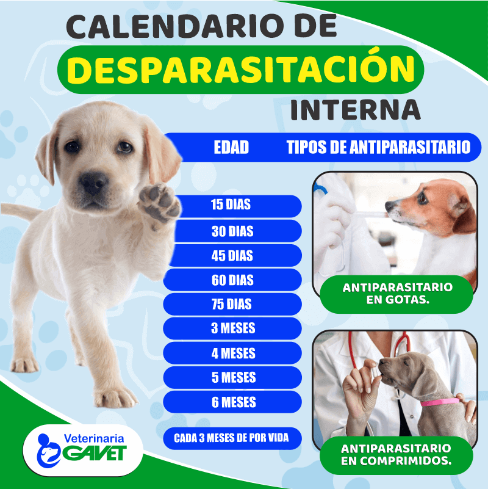
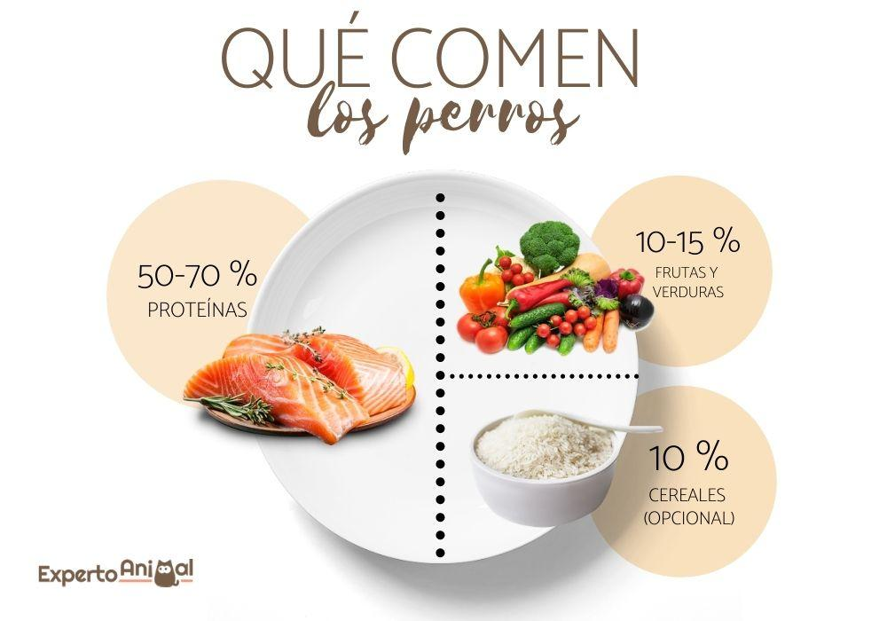

Corte de Uña
Cortar las uñas a una mascota (especialmente perros) es fundamental para evitar dolor al caminar, problemas articulares, infecciones y deformaciones en las patas.
Cuidamos a tus mejores amigos
Cortar las uñas a una mascota (especialmente perros) es fundamental para evitar dolor al caminar, problemas articulares, infecciones y deformaciones en las patas.
El cepillado frecuente elimina el pelo muerto, suciedad y parásitos, previene nudos dolorosos que causan dermatitis, ayuda a regular su temperatura corporal, distribuye aceites naturales y fortalece el vínculo afectivo
Vacunar a los perros es fundamental para estimular su sistema inmunológico, creando defensas contra virus y bacterias mortales. Sirven para prevenir enfermedades graves, garantizar una vida larga y saludable, y proteger a la familia humana de enfermedades zoonóticas (que se transmiten de animales a personas), como la rabia

Desparasitar a los perros es esencial para eliminar y prevenir parásitos internos (lombrices, gusanos del corazón) y externos (pulgas, garrapatas), protegiendo su salud digestiva, respiratoria y cutánea. Esto previene enfermedades graves, anemia, alergias y evita el contagio de enfermedades zoonóticas a los humanos, especialmente niños.

La alimentación balanceada en un perro es fundamental para garantizar su salud integral, energía y longevidad, cubriendo sus necesidades específicas de proteínas, grasas, carbohidratos, vitaminas y minerales. Asegura un desarrollo óseo y muscular correcto, fortalece el sistema inmunológico, mejora la digestión y mantiene un pelaje brillante y piel sana
